歡迎來到 PHP雲端ERP 的世界
PHP 是開發 雲端ERP 應用程式的工具組。提供簡易的介面和邏輯結構來使用豐富的函式庫，其目的是讓你加 快開發速度。使用 PHP 只需要寫少少的程式，創造力可專注在專案開發。
雲端ERP 使用手冊目錄
貳、建檔基本操作說明
一、基本資料建檔操作說明
<基本資料建檔以基本資料管理系統裡的廠別資料做範例，以下為操作說明>
1.新增
目的:於資料庫中新增一筆資料
(1).依照需求進入需要的操作頁面
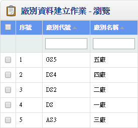 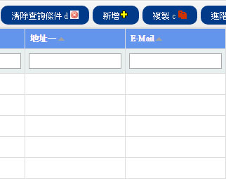(2).移動至上方點擊新增或是「Alt」+「+」進入新增功能
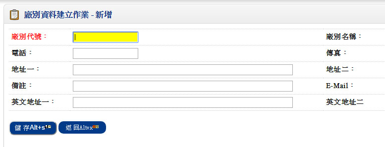(3).資料輸入完成時點擊或是「Alt」+「s」儲存資料
(4).若資料輸入完成想返回瀏覽的頁面，點擊或是「Alt」+「x」返回
2.查詢
目的:查詢已存在的資料，本系統提供了兩種方式方便您做資料查詢
(1)快速查詢：可在最上面的資料欄位做條件篩選，並且於右方點擊升冪或降冪篩選
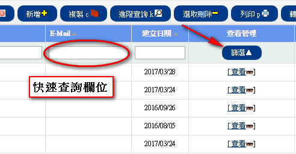EX:以DS做廠別代號快速查詢的條件，並且選擇降冪篩選
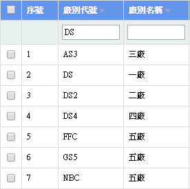 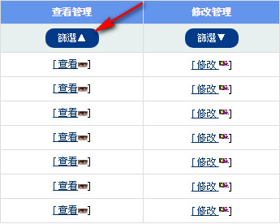▼
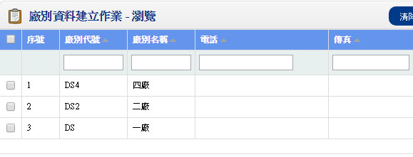(2)進階查詢:點擊進階查詢或是「Alt」+「k」可以做更多篩選條件，因應需求的不同做條件結合，在條件欄位
輸入需要的條件，並且挑選適合的條件關係，點擊使其出現在SQL搜尋欄位，點擊查詢
或是「Alt」+「k」將從資料庫中篩選符合的資料，點擊或是「Alt」+「x」返回瀏覽畫面
EX:尋找廠別代號AS3以及廠別名稱為四廠的廠商，依廠別名稱由小到大排序
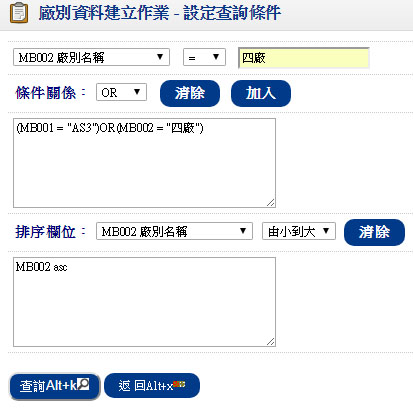▼
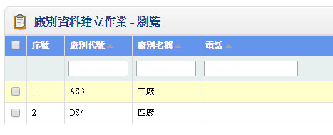3.查看
目的:瀏覽目標資料的各欄位值
(1).找到想要查看的目標資料
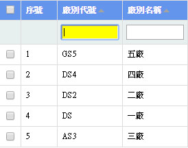 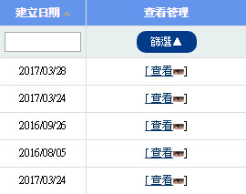(2).點擊即可查看資料

4.修改
目的:修改已經存在的資料
(1). 找到想要修改的目標資料
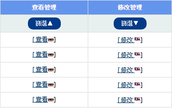(2). 點擊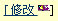即可修改資料
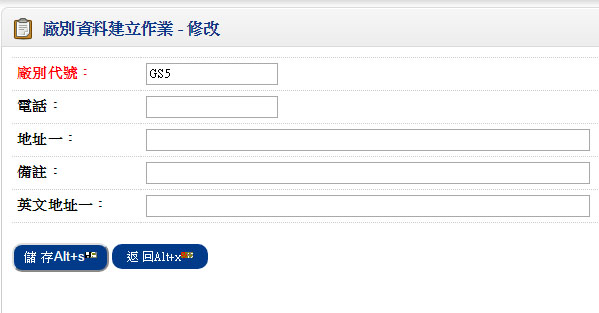(3). 點擊就可以儲存已修改的部分
註:若建檔為異動單據，則已確認者無法做修改，如果一定要修改，那就請先取消確認再做修改.
5.刪除
目的:刪除已經存在的資料
(1)於最左邊勾選想要刪除的目標資料
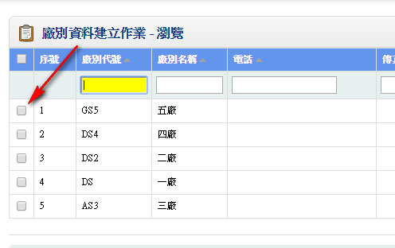(2)點擊上方的或是「Alt」+「-」會跳出訊息窗，點擊確定即可刪除
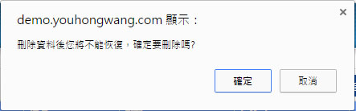註:資料一經刪除即無法再查詢，執行本功能時請審慎而三思.若建檔為異動單據，則已確認者無法
做刪除，如果一定要刪除，那就請先取消確認再做刪除
6.複製
目的:複製資料節省作業時間
(1)點擊複製或是「Alt」+「c」
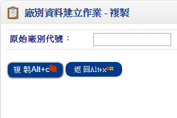 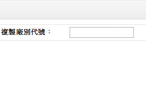(2)設定原始廠別代號並且輸入想要複製的廠別代號，點擊或是「Alt」+「c」做複製
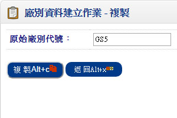 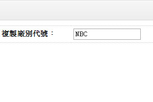(3)點擊或是「Alt」+「x」返回瀏覽頁面
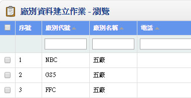7.排序
目的:使用升冪或是降冪排序使資料依序呈現
(1)進入要作業的系統裡
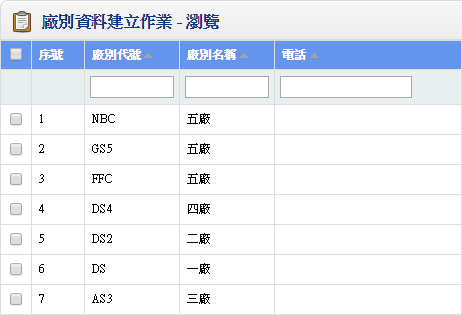(2)點擊想要排序的欄位，每點擊一次就會切換排序方法，目前為升冪排序
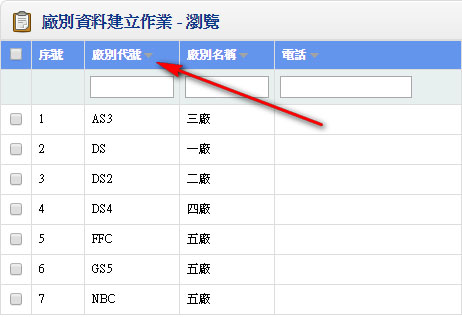二、異動單據建檔操作說明
在本系統的異動單據建檔程式 (如:庫存異動單據建立，訂單建立，銷貨單建立，銷退單建立，採購單建立，
收料單建立，結帳單
建立，收款單建立，應付憑單建立，領料單建立，會計傳票資料建立...等作業) 依以下
操作功能設計，操作簡便，容易學習，以下
為基本功能鈕及操作說明，我們將以「異動單建立」當成畫面
之說明，在解釋單據建立作業前，為詳細分辨資料，首先我們將異
動單據輸入畫面區分為 [單頭] 及 [單身]
及 [單尾]
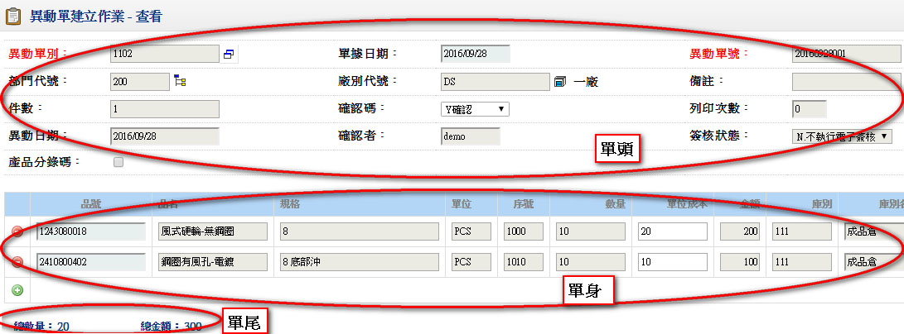
1.新增
目的:於資料庫中新增一筆單據，功能鈕圖形為或是「Alt」+「+」
(1).單頭:
選擇功能鈕後，將進入資料新增狀態，必須先輸入[單頭]資料，關於單頭資料輸入較為特殊之說明如下:
『單別』:可以選擇單據性質設定的單別或自行輸入即可.
『單號』:每一種單號必須先設定其編碼方式，請您先於「單據性質設定」(系統別的參數設定) 中定義單據
的編碼方式，如果單據
的編碼不為『手動編號』者，其編碼方式可分為『日編』，『月編』，『流水號』
三種方式，當單別輸入後系統會自動產生目前可使
用的最大單號加ㄧ，本欄位亦可進入修改成使用者欲輸
入的單號.而如果設定為手動編號之單據者，可自行輸入手工的單據編號.
『異動日期』:可以行事曆方式點選日期或直接輸入日期即可.當日期修改時與先前的日期月份不同時，若該
單據為自動編號
(『日編』或『月編』)則異動單號會依照目前日期的 [年月日] 或 年月] 重新給值
(2).單身:
[單頭] 資料輸入完成後，可進入 [單身] 明細資料的輸入， [單身] 資料輸入時，於品號打上數字會產生下拉
式選單，可以選擇相關
的品號，單身資料輸入完成後，請選擇或是「Alt」+「s」儲存資料，
表示整張單據(單頭及單身) 完全存檔;若資料輸入後不想要儲存時，請選擇或是「Alt」+「x」
放棄所輸入的資料
(3).單尾
[單身] 的數量及金額加總後顯示於 [單尾] 的總數量及總金額欄位
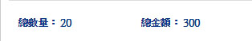註:若於 [單頭] 確認碼看到Ｙ確認，表示此資料已經進行相關記錄的更新
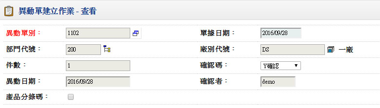例如:它是庫存異動單，則確認後的單據，表示單據會依照其[單據性質] 將庫別中的品號庫存量做增加或減少
2.查詢
目的:查詢已存在的資料，本系統提供了兩種方式方便您做資料查詢
(1)快速查詢：可在最上面的資料欄位做條件篩選，並且於右方點擊升冪或降冪篩選
EX:以1101做異動單別快速查詢的條件，並且選擇降冪篩選
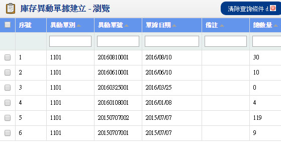(2)進階查詢:可以做更多篩選條件，因應需求的不同做條件結合，在條件欄位輸入需要的條件
，並且挑選適合的條件關係，點擊使其出現在SQL搜尋欄位，點擊查詢
「Alt」+「k」將從資料庫中篩選符合的資料，點擊「Alt」+「x」返回瀏覽畫面
EX:尋找異動單單別1101以及1102，依總數量由小到大排序
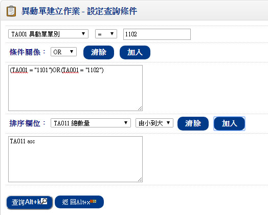▼
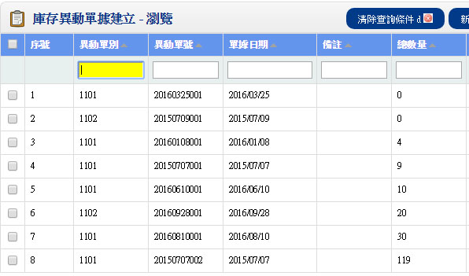